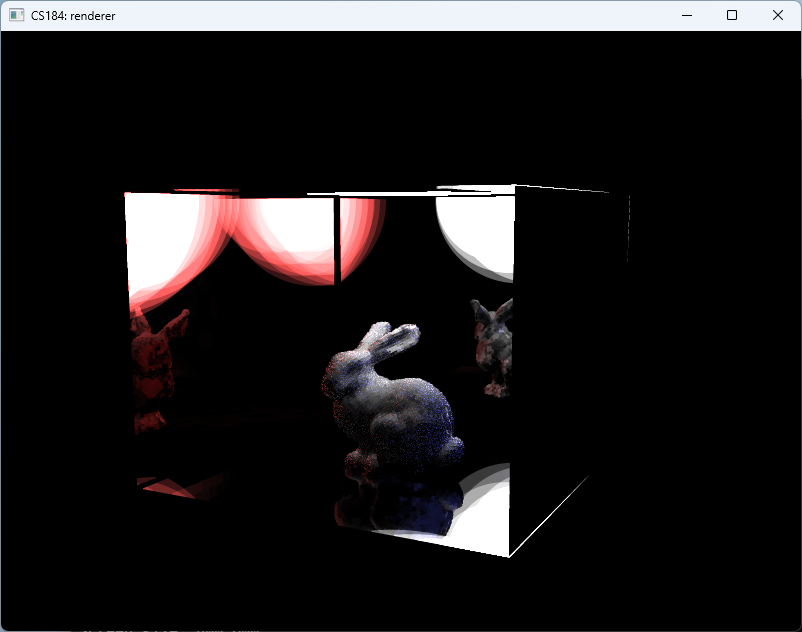

Lumen-Inspired Real-Time Global Illumination
UC Berkeley CS 184/284A · Spring 2025
Jasper Liu, Jinglun Zhang, Junming Chen, and Zihan Liao
🏆 One of five Showcase Winners selected from more than 60 team projects. View the official showcase.

About the project
This educational renderer explores signed distance fields, card-based surface caches, radiance caching, and limited-bounce tracing to approximate global illumination at interactive frame rates. It extends the CS 184/284A Homework 3 path tracer and is inspired by ideas behind Unreal Engine 5's Lumen; it is not Epic Games' production implementation and does not run inside Unreal Engine.
The public repository contains reports, presentation links, video, and rendered results. Course-derived source code is preserved separately in a private archive.